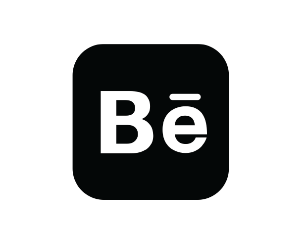

Elesha Suryawanshi
Graphic Designer
ABOUT ME
I am a college student, a young designer with a curious yet disciplined mind. I like to keep up with the ongoing design trends as well as make use of the classics. Seeking to get an insight into the current workplace scenario and further sharpen my skills.
EDUCATION
Stepping Stones High School, Aurangabad
CBSE Board X (2017)
Stepping Stones High School, Aurangabad
CBSE Board XII, PCB (2019)
National Institute of Fashion Technology, Hyderabad
Bachelor of Design (Fashion Communication) 6th Semester (2019-2023)
EXPERIENCE
1. Owner, creator, social media manager - @by.elesha Instagram page (2020-ongoing)
I keep posting my digital artworks and other art related work on this page. I also take cutom orders for digital illustrations and embroidery on canvas art. Now I have started posting more of my branding passion projects and branding related design challenges.
2. Self initiated projects
I also work on various projects which are just for my practise and experimentation. I have worked on poster designs, branding, packaging design and fashion forecasting, all of this is uploaded on my Behnace account.
3.Branding and Social Media Internship
I recently did a branding and social media internship with a Mumbai based studio. I worked with various clients. Majority of my work was to make the posts and stories for the different brand's Instagram pages.
SOFTWARE SKILLS
- Adobe Illustrator
- Adobe Photoshop
- Adobe InDesign
OTHER SKILLS
- Hand drawings / illustrations
- Photography
- Acrylic painting
- Aesthetic sense
- Communication
- Time management
CONTACT
9422206545
meelesha@gmail.com

https://www.behance.net/eleshasuryawa